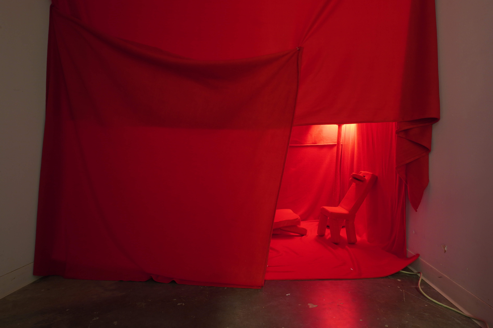

↓YOU↓ ARE STUCK IN A RED ROOM

This installation explores anthropomorphism, the phenomenon of projecting human mannerism and traits on what isn’t human, like objects or animals. It additionally explores themes of when that phenomenon fails and leads to uncanny valley, the effect of being off-put by something trying to look human but failing. This piece sheds light on how we approach objects as living sentient beings and project life and individuality onto them, while also inviting play in a new universe where things are eerie but also interesting to discover. This installation also ties into my experience as an autistic individual and our relationship with the uncanny valley, object attachment and masking.
